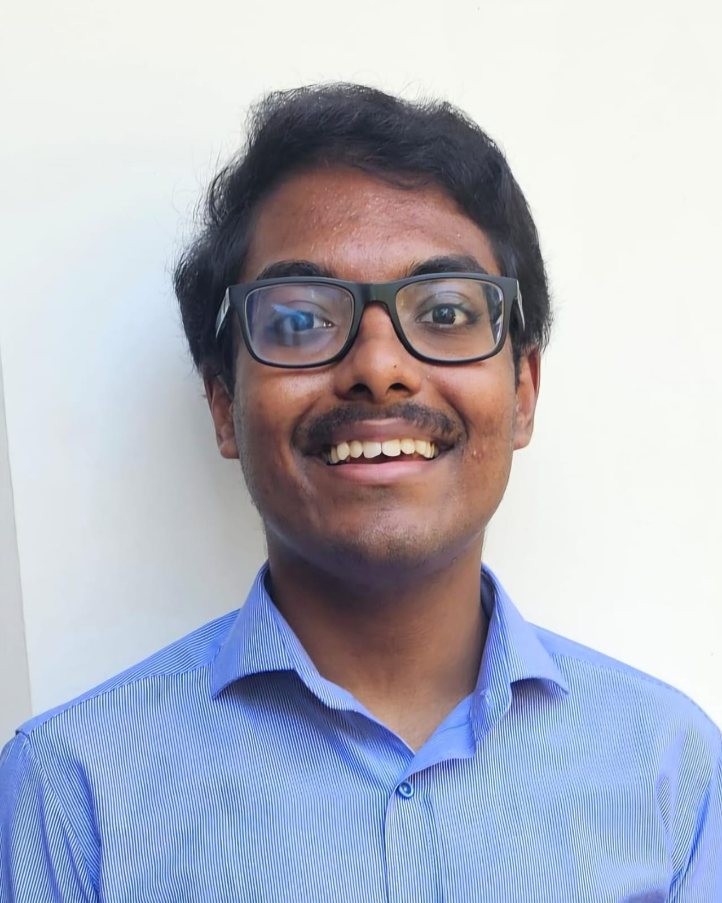

Hey! I'm Shaun Thomas, nice to meet you :D

I'm a first-year undergraduate CSE student studying at IIIT Hyderabad, and before this, I completed my 12th in FAIPS-DPS in Ahmadi, Kuwait. I'm inquisitive by nature, and love exploring different fields of study! (my favourite subjects in school were Math and Chemistry :P) Right now, I'm looking into AI-aided drug discovery, and epigenetic gene regulation. You'll likely find me buried in research papers, on an random tangent completely unrelated to my work hehe.
Apart from that, I'm really into cooking and baking, especially the latter (and eating what I've made, duh :D). You can often catch me stress-baking in the kitchen on the day before the exam hehe. I also love listening and playing music; I'm a classically-trained pianist, and I try to sing, though I don't do it well lol. In my free time, I love to read as well, though I haven't read a book in sometime because academics (OH I also LOVE badminton, it's the only sport I play :P)
And for those of you who wanted a timeline of my important milestones (I'm looking at you, ISS TAs), here you go I guess....?
(On a side note, please take this all in good fun lol, I meant for this to be as unserious as possible hehe)
- August 25, 2007: Entered the world :D They say that I was born with a loud mouth, which like, RUDE (but also true :P)
- Circa 2015: Won my first creative writing competition This was when I really started getting into writing poetry, short stories and the like
- Oct 2019 - Jan 2020: Won my first major quiz competitions! I have always loved quizzing, and it'll still continue to be one of my favourite hobbies (shameless self promotion, pls check out TVRQC ty)
- November 2023: Got my ABRSM Grade 8 piano certification! Huge win for me, though I broke my wrist soon after due to too much playing :/ it's better now tho lol, I'm currently working toward my piano diploma
- May 2025: Graduated as the Class 12 school boards topper :D Came out of school alive! (Despite undergoing the monstrosity that was JEE Advanced 😭)
- July 26, 2025: Joined IIITH! Love being here, though this might change within a few months LOL
Feel free to take a look at some of the projects I've made, and if you're into the same things as I am, feel free to reach out! Would love to hear from you :D